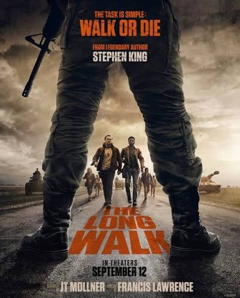

Ficçao cientifica distopica
A longa marcha
Em um futuro distópico sob um regime autoritário nos Estados Unidos, cinquenta jovens rapazes participam de uma competição anual de resistência mortal chamada A Longa Marcha. Eles devem caminhar sem parar a uma velocidade mínima estipulada. Quem parar ou diminuir o ritmo recebe advertências e, após a terceira, é executado a tiros. O último sobrevivente ganha um prêmio de um desejo para o resto da vida. O filme acompanha o jovem Raymond Garraty e seus concorrentes em meio ao desgaste físico e psicológico extremo.
Sessoes: 18/08
15:00
17:00
20:00
22:00
Garantir ingresso